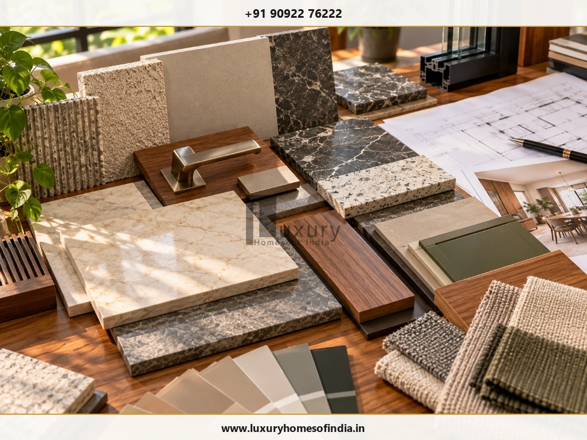
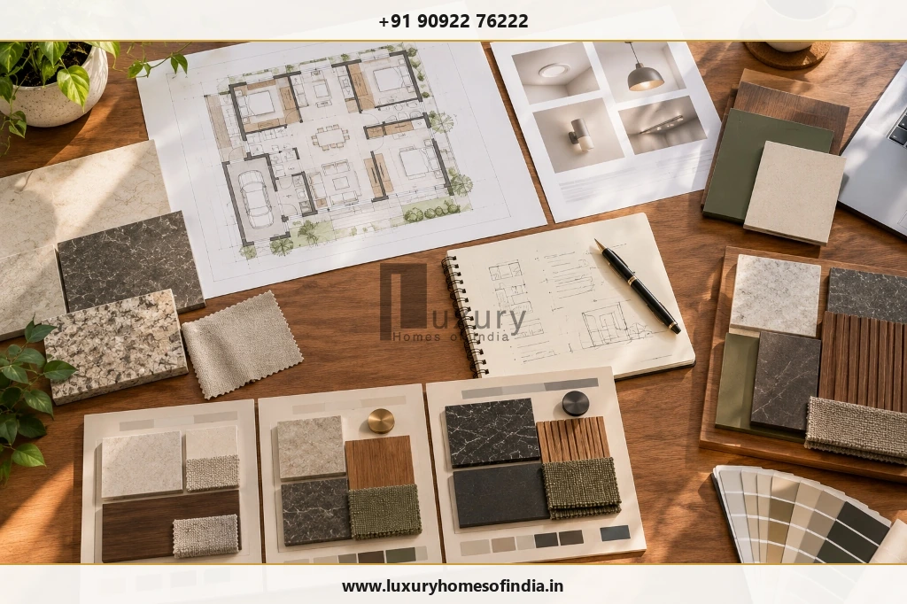
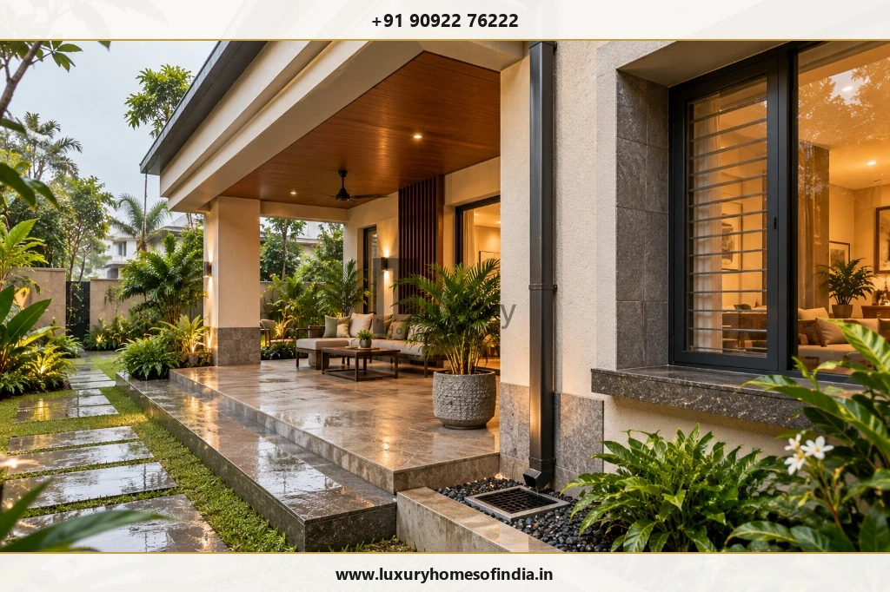

Executive Summary for Homeowners
Premium and luxury home construction differ mainly in the degree of customisation, material selection, design coordination and building systems—not in a universal technical grade. A premium home can deliver excellent comfort and durability through thoughtful planning, good workmanship and appropriate specifications. A luxury home may add bespoke architecture, custom interiors, specialist finishes and integrated technology, depending on the homeowner's priorities. In Chennai, the right choice also depends on site conditions, heat, humidity, rainfall, maintenance expectations and the overall project budget. Before comparing construction packages, establish what each quotation includes, how the built-up area is measured, which materials and systems are specified, and which items are excluded. A detailed bill of quantities (BOQ), coordinated drawings and a clear contract provide a more reliable basis for comparison than the words “premium” and “luxury” alone.

2. What does luxury home construction mean?
Luxury construction typically involves a higher degree of personalisation across architecture, interiors, finishes and building systems. Its defining characteristic is coordinated design rather than the presence of any single expensive product.
Depending on the project, this may involve:
- Bespoke planning around the plot and household's lifestyle.
- Custom joinery, cabinetry and interior detailing.
- Carefully selected natural stone or specialist surface finishes.
- Designed lighting layers and integrated controls.
- Glazing selected for thermal, solar, safety and weather performance.
- Coordinated air-conditioning, ventilation, acoustic and security requirements.
- Landscaped outdoor areas and carefully detailed transitions between indoor and outdoor spaces.
Not every luxury home needs every feature. Additional complexity should have a clear purpose, a documented specification and a maintenance plan.
In Chennai, for example, larger glazed openings should be assessed for solar exposure, heat gain, shading, weather sealing and cleaning access—not selected on appearance alone.

3. Premium vs luxury: what changes?
Review this side-by-side comparative matrix to see how specifications evolve between premium and bespoke luxury tiers across core building elements:
| Decision area | Premium specification | Luxury specification |
|---|---|---|
| Architecture | Refined planning and selected upgrades | More bespoke planning and architectural detailing |
| Structure | Engineered for the approved design and applicable requirements | Engineered for the approved design and applicable requirements, including any added complexity |
| Flooring | Quality tiles, granite or other selected finishes | May include natural stone, specialist surfaces or customised combinations |
| Doors and windows | Suitable frames, shutters and hardware | May include custom joinery, specialised glazing and premium hardware |
| Kitchen and storage | Modular or partly customised solutions | More extensive custom cabinetry and integrated detailing |
| Lighting | Functional and decorative lighting | Potentially layered lighting with coordinated controls |
| Building systems | Conventional systems or selected upgrades | Potentially more integrated climate, security and automation systems |
| Outdoor areas | Practical external works and selected landscaping | More coordinated outdoor living and landscape design |
| Maintenance | Depends on materials and workmanship | May involve additional care for specialist materials and systems |
These categories overlap. A homeowner can choose a premium specification for most rooms and invest in luxury detailing only where it improves the living experience.

4. How much does premium or luxury construction cost in Chennai?
There is no single reliable rate for every premium or luxury home. Prices depend on the approved design, built-up area, structural requirements, material choices, labour, site access, service installations, finish level and the scope of the contract.
The figures in the original draft—₹2,300–₹2,900 per sq. ft. for premium and ₹2,900–₹3,800+ per sq. ft. for luxury—should be treated as illustrative planning assumptions only. They are not verified current LHI rates, guaranteed market rates or an all-inclusive project budget.
Calculate a preliminary construction budget
Use this formula:
For illustration only, if a homeowner assumes a rate of ₹2,800 per sq. ft. for a 2,000 sq. ft. scope, the arithmetic gives ₹56 lakh. This is a hypothetical calculation, not a current quotation or recommendation of an appropriate rate.
Before using any rate, confirm:
- Whether the area is built-up, carpet, plinth or another defined measurement.
- Whether the quote covers structure, finishes and building services.
- Whether the kitchen, wardrobes, lighting fixtures and air-conditioning are included.
- Whether design fees, approvals, taxes, compound walls, landscaping and utility works are excluded.
- Whether material brands, quantities, approved alternatives and installation standards are documented.
5. Where can the additional luxury budget go?
The cost difference usually results from several decisions combined:
Architecture and design coordination
Bespoke layouts, detailed elevations and complex spatial arrangements may require more design development and coordination.
Materials and installation
Natural stone, custom surfaces and specialist finishes can introduce additional costs for preparation, cutting, installation, wastage, sealing and future maintenance.
Custom interiors
Cabinetry, concealed storage, wall panelling and specialised hardware may increase the interiors budget and may sit outside the main construction contract.
Windows and façade
Larger openings and specialised glazing require suitable engineering, weatherproofing and performance assessment.
Lighting and automation
Integrated controls can require additional wiring, equipment, configuration and future servicing.
Climate control and outdoor works
Air-conditioning, ventilation, landscape lighting, drainage and terrace detailing should be planned as complete systems rather than isolated purchases.
Key Takeaway: The useful question is not simply which option costs more. It is which additional cost creates a demonstrable improvement in comfort, function, appearance or maintainability.
6. Which specification offers better value?
The right answer depends on how the home will be used.
- Choose a premium starting specification when functionality, durable finishes and budget clarity are the main priorities.
- Consider luxury upgrades when personalisation, specialised detailing or integrated systems address a specific household requirement.
- Consider a hybrid specification when selected rooms or features deserve a higher level of investment than the rest of the house.
A hybrid approach might prioritise the entrance, living room, kitchen or master suite while retaining simpler finishes in secondary areas. It can also prioritise less visible but important items such as waterproofing, drainage, service access and appropriate material protection.
No finish category guarantees better workmanship or lower lifetime costs. Those outcomes depend on design, procurement, installation, inspection and maintenance.
7. What should Chennai homeowners consider?
Before finalising a specification, review these site- and climate-related factors with the relevant professionals:
Waterproofing and drainage
Assess terraces, balconies, bathrooms, utility areas and other exposed locations. Confirm the specified system, substrate preparation, junction detailing and inspection requirements.
Heat and sunlight
Consider orientation, shading, roof exposure, window placement and glazing performance. Evaluate ventilation and cooling requirements alongside the architectural design.
Moisture and corrosion
Select materials, coatings, fixings and protective details for the actual site exposure. Do not assume that one specification suits every location in Chennai.
Maintenance access
Check how façades, windows, water systems, air-conditioning equipment and automation components will be serviced.
Water and energy use
Consider suitable plumbing fixtures, efficient lighting, appliance requirements and relevant water-management provisions during design development.

8. How to compare construction quotations
Use the same brief and measurement basis when requesting competing quotations:
- Finalise the preliminary design and required built-up area.
- Prepare a detailed BOQ with quantities and specification descriptions.
- Record material brands, approved equivalents and finish expectations.
- List inclusions and exclusions separately.
- Compare structural, waterproofing, plumbing and electrical scope.
- Confirm inspection stages, supervision and documentation.
- Review payment milestones, variation procedures and contractual responsibilities.
- Maintain a project contingency appropriate to the design maturity and identified risks.
Budgeting References: For related budgeting guidance, see our guides on hidden costs in house construction in Chennai and how to reduce house construction cost.
9. Common mistakes to avoid
Choosing finishes before resolving the layout
Establish circulation, room proportions, storage and services before committing to decorative upgrades.
Treating a higher rate as proof of structural quality
Review engineering documents, specifications, workmanship requirements and inspection procedures.
Comparing quotations with different inclusions
Two per-square-foot rates cannot be compared fairly if their scope and measurement basis differ.
Ignoring ownership and maintenance
Assess cleaning, replacement, servicing and access requirements for specialist finishes and systems.
Adding automation without a defined need
Decide what should be controlled, how the system will operate and how it can be maintained.
Underestimating external works
Clarify the scope for drainage, compound walls, landscaping, utility connections and other items outside the primary building contract.
10. Frequently asked questions
Conclusion
Choosing between premium and luxury home construction begins with a clear brief, not a label. Define how the home should function, establish the total project budget and compare detailed specifications on an equivalent basis. Prioritise appropriate engineering, workmanship, waterproofing and reliable building services before adding specialist finishes and technology. In Chennai, site exposure, heat, moisture, rainfall and maintenance access should also influence material and system selection.
A premium specification, a luxury specification or a considered combination can each be appropriate when the design and scope match the homeowner's priorities.
Discuss your home-construction requirements with Luxury Homes of India
Whether you are planning a high-performance premium residence or a bespoke luxury villa, our architectural and engineering teams are available to evaluate your drawings, specifications, and BOQ allowances.
Contact Luxury Homes of India
- Phone: +91 90922 76222
- Email: info@luxuryhomesofindia.in
- Address: #85, 4th Floor, Lotus Tower, Guindy, Chennai – 600032
- Website: luxuryhomesofindia.in
Disclaimer: Cost examples in this article are illustrative planning calculations, not a binding quotation. Actual costs depend on the approved design, site conditions, specifications, market rates, taxes and contract inclusions. Obtain a project-specific estimate before making financial commitments.